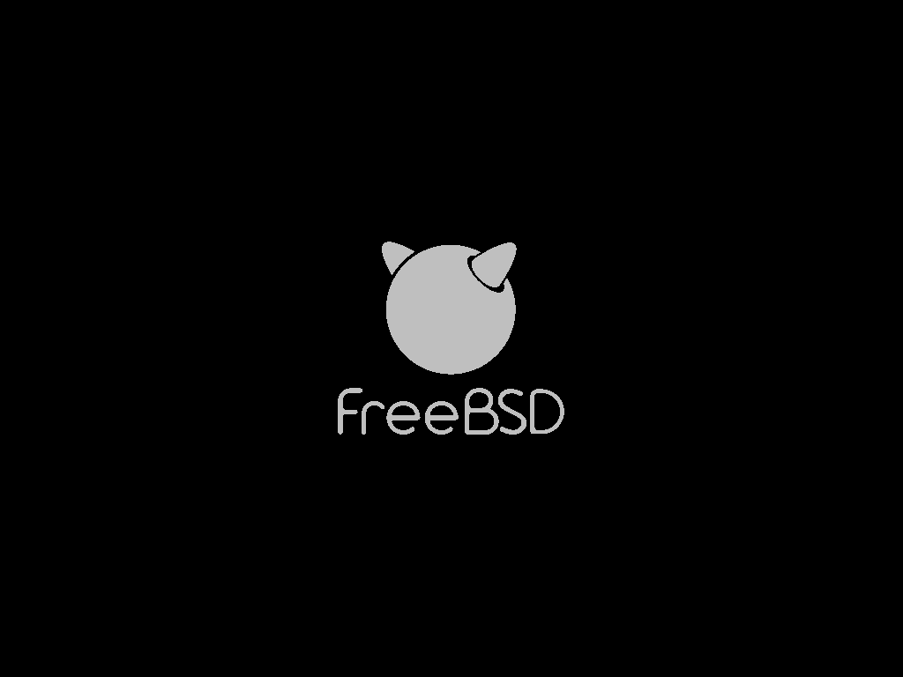

启动引导器
Table of Contents
loader.conf 的功能定位与文件结构
根据 loader.conf(5) 手册页所述，loader.conf 是 FreeBSD 系统引导过程中的核心配置文件。该文件在引导加载程序 loader(8) 阶段被读取，用于指定要 启动的内核 、 传递给内核的参数 以及需要 加载的附加模块 ，同时可设置 loader(8) 支持的所有变量
loader.conf(5) 相关的文件结构如下：
/
└── boot/ 操作系统引导过程中使用的程序和配置文件
├── loader.conf 用户定义设置
├── loader.conf.lua 使用 Lua 编写的用户定义设置（默认不存在）
├── loader.conf.d/ 用户定义设置的子目录（默认为空）
│ ├── *.conf 拆分成多个文件的用户定义设置（默认不存在）
│ └── *.lua 使用 Lua 编写并拆分成多个文件的用户定义设置（默认不存在）
├── loader.conf.local 机器特定设置，可覆盖其他配置文件中的设置（默认不存在）
└── defaults/ 存放默认引导配置文件
└── loader.conf 默认设置文件（请勿直接修改），参见 loader.conf(5)
loader.conf 是系统启动配置的关键文件，位于 /boot/loader.conf 文件。写入此处的配置比 rc.conf 文件更早生效，但不当配置可能会妨碍系统正常启动
详细说明请参考 loader.conf 手册页 不建议直接修改 /boot/defaults/loader.conf 文件 如需自定义配置，应使用 /boot/loader.conf 文件或 /boot/loader.conf.local 文件进行本地配置扩展 其中 /boot/loader.conf.local 文件优先级最高，专门用于机器特定设置
ZFS 标准安装场景下的 loader.conf 配置内容
在 ZFS 标准安装方案中，/boot/loader.conf 文件通常包含以下配置内容（以 15.0-RELEASE 为例）：
kern.geom.label.disk_ident.enable="0" # 禁用 disk_ident 标签，形如 /dev/diskid/DISK-S3Z4NB0K123456（硬件序列号） kern.geom.label.gptid.enable="0" # 禁用基于 GPT UUID 生成的设备名，形如 /dev/gptid/3f6c3a3e-4bcb-11ee-8e6d-001b217e6c8a zfs_enable="YES" # 默认加载 zfs 模块
该文件由 bsdinstall(8) 安装程序在系统安装过程中自动写入。具体而言，usr.sbin/bsdinstall/scripts/zfsboot 脚本会分别写入 kern.geom.label.disk_ident.enable="0" 、 kern.geom.label.gptid.enable="0" 和 zfs_enable="YES" 这三行配置
因此在使用 ZFS 标准安装方案的系统中，这三行即是 /boot/loader.conf 文件的全部初始内容
默认配置文件的内容结构与说明
默认配置文件位于源代码中的 stand/defaults/loader.conf。以下内容基于版本 loader.conf.5: "console" setting does not document multi-value possiblity：
# 这是 loader.conf —— 一个包含许多实用变量的文件 # 可通过设置这些变量来改变系统的默认加载行为。 # 不应直接编辑此文件！ # 请把任何要覆盖的设置放入 loader_conf_files 中的某个文件里 # 这样以后在更新这些默认值时，就不会影响原生配置信息。 # # 所有参数都必须使用双引号。 # ### 基础配置选项 ############################ # 执行命令，在屏幕上打印“Loading /boot/defaults/loader.conf”这句话 exec="echo Loading /boot/defaults/loader.conf" # （正在加载 /boot/defaults/loader.conf） # 内核设置 kernel="kernel" # /boot 子目录，包含内核和模块。 bootfile="kernel" # 内核名称（可以是绝对路径） kernel_options="" # 传递给内核的标志 # 引导启动器配置文件配置 loader_conf_files="/boot/device.hints /boot/loader.conf" # loader 默认读取的配置文件列表 loader_conf_dirs="/boot/loader.conf.d" # loader 读取的配置目录，将加载该目录中的 *.conf 和 *.lua 文件 local_loader_conf_files="/boot/loader.conf.local" # 本机专用配置文件，可覆盖其他配置文件中的设置 nextboot_conf="/boot/nextboot.conf" # 下一次启动使用的临时配置文件 verbose_loading="NO" # 设置为 YES 将启用详细的引导输出 ### 启动画面配置 ############################ # 启动 Logo 设置 splash_bmp_load="NO" # 设置为 YES 将启用 bmp 启动画面 splash_pcx_load="NO" # 设置为 YES 将启用 pcx 启动画面 splash_txt_load="NO" # 设置为 YES 将启用 TheDraw 启动画面 vesa_load="NO" # 设置为 YES 将加载 vesa 模块 bitmap_load="NO" # 如果想使用启动画面，请设置为 YES bitmap_name="splash.bmp" # 设置为文件名 bitmap_type="splash_image_data" # 并将其放在 module_path 中 splash="/boot/images/freebsd-logo-rev.png" # 再设置 boot_mute=YES 将加载它 ### 屏幕保护模块 ################################### # 最好在 rc.conf 中设置这些屏保 screensave_load="NO" # 设置为 YES 将加载屏幕保护程序模块 screensave_name="green_saver" # 设置要使用的屏幕保护程序模块名称 ### 早期 hostid 配置 ############################ # 这台机器的唯一标识 hostuuid_load="YES" # 设置为 YES 来加载 hostuuid 模块 hostuuid_name="/etc/hostid" # 指定 hostid 文件路径 hostuuid_type="hostuuid" # 指定模块类型为 hostuuid ### 随机数生成配置 ################## # 适用于密码模块，随机数生成 # 参见 rc.conf(5)。rc.conf 中 entropy_boot_file 配置变量必须与下面的设置相同 # rc.conf 中的 entropy_boot_file 和 loader.conf 中的 entropy_cache_name 必须指定同一个文件 entropy_cache_load="YES" # 设置为 NO 将禁用在启动时加载缓存的熵 entropy_cache_name="/boot/entropy" # 设置为该文件的名称 entropy_cache_type="boot_entropy_cache" # 内核查找启动时熵缓存所必需的类型。即使上面的 _name 发生变化，这个值也绝不能改变！ entropy_efi_seed="YES" # 设置为 NO 将禁用从 UEFI 硬件随机数生成器 API 加载熵 entropy_efi_seed_size="2048" # 设置为其他值以改变从 EFI 请求的熵数量 ### 内存黑名单配置 ############################ # 屏蔽坏内存地址用，适用于服务器 ram_blacklist_load="NO" # 设置为 YES 可加载一个文件，该文件包含需要从运行系统中排除的地址列表 ram_blacklist_name="/boot/blacklist.txt" # 设置为该文件的名称 ram_blacklist_type="ram_blacklist" # 内核查找黑名单模块所必需的类型 ### 微码加载配置 ######################## # 处理器微码配置 cpu_microcode_load="NO" # 设置为 YES 以在启动时加载并应用微码更新文件 cpu_microcode_name="/boot/firmware/ucode.bin" # 设置为微码更新文件路径 cpu_microcode_type="cpu_microcode" # 内核查找微码更新文件所必需的类型 ### ACPI 设置 ########################################## acpi_dsdt_load="NO" # DSDT 覆盖 acpi_dsdt_type="acpi_dsdt" # 请勿修改此项 acpi_dsdt_name="/boot/acpi_dsdt.aml" # 使用此文件覆盖 BIOS 中的 DSDT acpi_video_load="NO" # ACPI 视频扩展驱动 ### 审计设置 ######################################### # 安全审计系统的事件定义预加载配置 audit_event_load="NO" # 设置为 YES 将在启动早期预加载 audit_event 配置文件 audit_event_name="/etc/security/audit_event" # 指定 audit_event 配置文件路径 audit_event_type="etc_security_audit_event" # 内核查找并识别该配置文件所需的类型 ### 初始内存磁盘设置 ########################### # 内存盘设置 #mdroot_load="YES" # “mdroot” 前缀可任意修改 #mdroot_type="md_image" # 在启动时创建 md(4) 内存磁盘 #mdroot_name="/boot/root.img" # 指向包含磁盘镜像的文件路径 #rootdev="ufs:/dev/md0" # 将根文件系统设置为 md(4) 设备 ### 引导设置 ######################################## #loader_delay="3" # 在加载任何内容前延迟的秒数。默认未设置且禁用（无延迟） #autoboot_delay="10" # 自动启动前延迟的秒数，-1 表示禁止用户中断，NO 表示禁用 #print_delay="1000000" # loader 消息的慢速打印，便于调试。单位为微秒（1000000 微秒 = 1 秒） #password="" # 修改启动选项的密码，避免修改启动选项 #bootlock_password="" # 设置启动锁定密码，避免未授权启动（参见 check-password.4th(8)） #geom_eli_passphrase_prompt="NO" # 是否提示：输入 geli(8) 密码来挂载根文件系统 bootenv_autolist="YES" # 自动填充 ZFS 启动环境列表 #beastie_disable="NO" # 是否启用 Beastie（小恶魔）启动菜单 efi_max_resolution="1x1" # 设置 EFI 引导下使用的最大分辨率：可选 480p、720p、1080p、1440p、2160p/4k、5k；自定义宽 x 高（例如 1920x1080） #kernels="kernel kernel.old" # 在启动菜单中显示的内核列表 kernels_autodetect="YES" # 自动检测 /boot 中的内核目录 #loader_gfx="YES" # 当图形可用时使用图形界面 #loader_logo="orbbw" # 可选启动 Logo 有：orbbw、orb、fbsdbw、beastiebw、beastie、none #comconsole_speed="115200" # 设置当前串口控制台速率 #console="vidconsole" # 以逗号（,）或空格（ ）分隔的控制台列表 #currdev="disk1s1a" # 设置当前设备 module_path="/boot/modules;/boot/firmware;/boot/dtb;/boot/dtb/overlays" # 设置模块搜索路径 module_blacklist="drm drm2 radeonkms i915kms amdgpu if_iwlwifi if_rtw88 if_rtw89" # 引导器模块黑名单 module_blacklist="${module_blacklist} nvidia nvidia-drm nvidia-modeset" # 追加黑名单模块 #prompt="\\${interpret}" # 设置 loader 命令提示符 #root_disk_unit="0" # 强制设置根磁盘单元号 #rootdev="disk1s1a" # 设置根文件系统 #dumpdev="disk1s1b" # 在启动早期设置 dump 设备 #tftp.blksize="1428" # 设置 RFC 2348 TFTP 块大小。若 TFTP 服务器不支持 RFC 2348，则块大小为 512 有效值范围：(8,9007) #twiddle_divisor="16" # 减慢进度指示器 < 16 < 加快进度指示器 ### 内核设置 ######################################## # 以下 boot_ 变量通过赋值来启用 # 它们在内核环境中存在（参见 kenv(1)）时，效果与设置对应的启动标志相同（参见 boot(8)）。 #boot_askname="" # -a：提示用户输入根设备名称 #boot_cdrom="" # -C：尝试从 CD-ROM 光学介质挂载根文件系统 #boot_ddb="" # -d：指示内核通过 DDB 调试器模式启动 #boot_dfltroot="" # -r：使用静态配置的根文件系统 #boot_gdb="" # -g：为内核调试器选择 gdb-remote 模式 #boot_multicons="" # -D：使用多个控制台 #boot_mute="" # -m：静默控制台 #boot_pause="" # -p：在设备探测时每行暂停 #boot_serial="" # -h：使用串口控制台 #boot_single="" # -s：以单用户模式启动系统 #boot_verbose="" # -v：打印额外调试信息 #init_path="/sbin/init:/sbin/oinit:/sbin/init.bak:/rescue/init" # 设置 init 的候选路径列表 #init_shell="/bin/sh" # init(8) 使用的 shell 二进制文件 #init_script="" # init(8) 在 chroot 前运行的初始脚本 #init_chroot="" # init(8) 要 chroot 的目录 ### 内核可调参数 ######################################## #hw.physmem="1G" # 限制物理内存大小。参见 loader(8) #kern.dfldsiz="" # 设置初始数据段大小限制 #kern.dflssiz="" # 设置初始堆栈大小限制 #kern.hz="100" # 设置内核时间间隔定时器频率 #kern.maxbcache="" # 设置最大缓冲区缓存 KVA 存储 #kern.maxdsiz="" # 设置最大数据段大小 #kern.maxfiles="" # 设置系统全局最大打开文件数 #kern.maxproc="" # 设置最大进程数 #kern.maxssiz="" # 设置最大堆栈大小 #kern.maxswzone="" # 设置最大交换元 KVA 存储 #kern.maxtsiz="" # 设置最大文本段大小 #kern.maxusers="32" # 设置各种静态表的大小 #kern.msgbufsize="65536" # 设置内核消息缓冲区大小 #kern.nbuf="" # 设置缓冲区头数量 #kern.ncallout="" # 设置最大定时器事件数量 #kern.ngroups="1023" # 设置最大附加组数 #kern.sgrowsiz="" # 设置堆栈增长量 #kern.cam.boot_delay="10000" # 根挂载时 CAM 总线注册延迟（毫秒），当 USB 设备作为根分区时有用 #kern.cam.scsi_delay="2000" # 扫描 SCSI 前的延迟（毫秒） #kern.ipc.maxsockets="" # 设置最大可用套接字数量 #kern.ipc.nmbclusters="" # 设置 mbuf 集群数量 #kern.ipc.nsfbufs="" # 设置 sendfile(2) 缓冲区数量 #net.inet.tcp.tcbhashsize="" # 设置 TCBHASHSIZE 值（TCP 控制块哈希表的大小） #vfs.root.mountfrom="" # 指定根分区 #vm.kmem_size="" # 设置内核内存大小（字节） #debug.kdb.break_to_debugger="0" # 允许控制台进入调试器 #debug.ktr.cpumask="0xf" # 启用 KTR 的 CPU 位掩码 #debug.ktr.mask="0x1200" # 启用的 KTR 事件位掩码 #debug.ktr.verbose="1" # 启用 KTR 事件的控制台输出 ### 模块加载语法示例 ########################## #module_load="YES" # 加载模块 "module" #module_name="realname" # 使用 "realname" 替代 "module" #module_type="type" # 加载时传递 "-t type" #module_flags="flags" # 传递 "flags" 给模块 #module_before="cmd" # 在加载模块前执行 "cmd" 命令 #module_after="cmd" # 在加载模块后执行 "cmd" #module_error="cmd" # 模块加载失败时执行 "cmd" ### 固件名称映射列表 # 在加载网卡驱动时内核会寻找对应的固件文件 iwm3160fw_type="firmware" # iwm3160 固件类型 iwm7260fw_type="firmware" # iwm7260 固件类型 iwm7265fw_type="firmware" # iwm7265 固件类型 iwm8265fw_type="firmware" # iwm8265 固件类型 iwm9260fw_type="firmware" # iwm9260 固件类型 iwm3168fw_type="firmware" # iwm3168 固件类型 iwm7265Dfw_type="firmware" # iwm7265D 固件类型 iwm8000Cfw_type="firmware" # iwm8000C 固件类型 iwm9000fw_type="firmware" # iwm9000 固件类型
配置引导选择界面的等待时间
引导选择界面的等待时间由 autoboot_delay 参数控制，该参数定义了系统在自动启动默认内核前等待用户干预的时长。通过修改此参数，可以根据实际需求调整启动流程的用户交互窗口。要调整等待时间，编辑 /boot/loader.conf 文件并新增以下条目：
autoboot_delay="2"
参数说明：2 表示设置系统启动自动引导延迟为 2 秒
精简启动输出信息
精简系统启动输出信息可以使启动过程更加简洁。这可以通过多维度配置实现：
- 在引导器层面减少内核加载信息
- 在服务启动阶段关闭状态提示
- 在网络配置中优化等待逻辑
以下配置从引导到多用户启动阶段逐步减少输出信息：
# echo boot_mute="YES" >> /boot/loader.conf # 静默启动并显示 Logo # echo debug.acpi.disabled="thermal" >> /boot/loader.conf # 屏蔽可能存在的 ACPI 报错 # sysrc rc_startmsgs="NO" # 关闭进程启动信息 # sysrc dhclient_flags="-q" # 安静输出 # sysrc background_dhclient="YES" # 后台 DHCP # sysrc synchronous_dhclient="YES" # 启动时同步 DHCP # sysrc defaultroute_delay="0" # 立即添加默认路由 # sysrc defaultroute_carrier_delay="1" # 接收租约时间为 1 秒
如下图所示，设置后可看到 FreeBSD 启动 Logo

参考文献
vermaden. FreeBSD Desktop – Part 1 – Simplified Boot[EB/OL]. (2018-03-29)[2026-03-26]. https://vermaden.wordpress.com/2018/03/29/freebsd-desktop-part-1-simplified-boot/. 介绍 FreeBSD 引导加载程序的精简配置方法与启动优化实践。 FreeBSD Project. rc.conf(5)[EB/OL]. [2026-03-26]. https://man.freebsd.org/cgi/man.cgi?rc.conf(5). FreeBSD Project. acpi(4)[EB/OL]. [2026-03-26]. https://man.freebsd.org/cgi/man.cgi?acpi(4). FreeBSD Project. loader(8)[EB/OL]. [2026-04-17]. https://man.freebsd.org/cgi/man.cgi?query=loader&sektion=8. 系统引导加载程序手册页。 FreeBSD Project. bsdinstall(8)[EB/OL]. [2026-04-17]. https://man.freebsd.org/cgi/man.cgi?query=bsdinstall&sektion=8. FreeBSD 安装程序手册页。
控制台屏幕保护程序的配置与应用
默认情况下，控制台驱动程序在屏幕空闲时不会执行任何特殊处理。如果预计长时间让显示器保持开启并处于空闲状态，应启用屏幕保护程序以防止烧屏
使用 bsdconfig 配置屏幕保护程序
可以通过 bsdconfig 工具配置屏幕保护程序：
$ bsdconfig
执行命令后，将显示如下界面：
┌---------------------┤System Console Screen Saver├---------------------┐ │ By default, the console driver will not attempt to do anything │ │ special with your screen when it's idle. If you expect to leave your │ │ monitor switched on and idle for long periods of time then you should │ │ probably enable one of these screen savers to prevent burn-in. │ │ ┌-------------------------------------------------------------------┐ │ │ │ 1 None Disable the screensaver │ │ │ │ 2 Blank Blank screen │ │ │ │ 3 Beastie "BSD Daemon" animated screen saver (graphics) │ │ │ │ 4 Daemon "BSD Daemon" animated screen saver (text) │ │ │ │ 5 Dragon Dragon screensaver (graphics) │ │ │ │ 6 Fade Fade out effect screen saver │ │ │ │ 7 Fire Flames effect screen saver │ │ │ │ 8 Green "Green" power saving mode (if supported by monitor) │ │ │ │ 9 Logo FreeBSD "logo" animated screen saver (graphics) │ │ │ │ a Rain Rain drops screen saver │ │ │ │ b Snake Draw a FreeBSD "snake" on your screen │ │ │ │ c Star A "twinkling stars" effect │ │ │ │ d Warp A "stars warping" effect │ │ │ │ Timeout Set the screen saver timeout interval │ │ │ ┌-------------------------------------------------------------------┐ │ ├-----------------------------------------------------------------------┤ │ [ OK ] [Cancel] │ └----------------- Choose a nifty-looking screen saver -----------------┘
| 菜单 | 说明 |
| 1 None Disable the screensaver | 1 无 禁用屏幕保护程序 |
| 2 Blank Blank screen | 2 空白 显示空白屏幕 |
| 3 Beastie "BSD Daemon" animated screen saver (graphics) | 3 Beastie “BSD Daemon” 动画屏幕保护程序（图形） |
| 4 Daemon "BSD Daemon" animated screen saver (text) | 4 Daemon “BSD Daemon” 动画屏幕保护程序（文字） |
| 5 Dragon Dragon screensaver (graphics) | 5 龙 动画屏幕保护程序（图形） |
| 6 Fade Fade out effect screen saver | 6 淡出 屏幕保护程序淡出效果 |
| 7 Fire Flames effect screen saver | 7 火焰 火焰效果屏幕保护程序 |
| 8 Green "Green" power saving mode (if supported by monitor) | 8 绿色“绿色”省电模式（如果显示器支持） |
| 9 Logo FreeBSD "logo" animated screen saver (graphics) | 9 标志 FreeBSD“logo”动画屏幕保护程序（图形） |
| a Rain Rain drops screen saver | a 雨滴 雨滴屏幕保护程序 |
| b Snake Draw a FreeBSD "snake" on your screen | b 蛇 在屏幕上绘制 FreeBSD“蛇” |
| c Star A "twinkling stars" effect | c 星星 闪烁星星效果 |
| d Warp A "stars warping" effect | d 扭曲 星星扭曲效果 |
| Timeout Set the screen saver timeout interval | 超时 设置屏幕保护程序超时时间 |
手动写入配置
也可以通过手动编辑配置文件来设置屏幕保护程序。编辑 /etc/rc.conf 文件，添加以下配置：
saver="beastie" # 选择屏保样式 blanktime="300" # 屏幕超时时间
可选的屏幕保护程序模块如下：
$ ls /boot/kernel/*saver* /boot/kernel/beastie_saver.ko /boot/kernel/fire_saver.ko /boot/kernel/snake_saver.ko /boot/kernel/blank_saver.ko /boot/kernel/green_saver.ko /boot/kernel/star_saver.ko /boot/kernel/daemon_saver.ko /boot/kernel/logo_saver.ko /boot/kernel/warp_saver.ko /boot/kernel/dragon_saver.ko /boot/kernel/plasma_saver.ko /boot/kernel/fade_saver.ko /boot/kernel/rain_saver.ko
自定义引导加载程序 Logo
可以自定义引导加载程序的 Logo 以个性化系统启动界面。默认有几种 Logo 可选：
- fbsdbw
- beastie
- beastiebw
- orb（UEFI 下彩色版）
- orbbw（默认）
- none（无 Logo）
以 fbsdbw 为例，在 /boot/loader.conf 文件中写入：
# 设置引导加载程序使用的 logo 名称为 fbsdbw loader_logo="fbsdbw"
| Next: UEFI固件 | Home: 系统管理 |